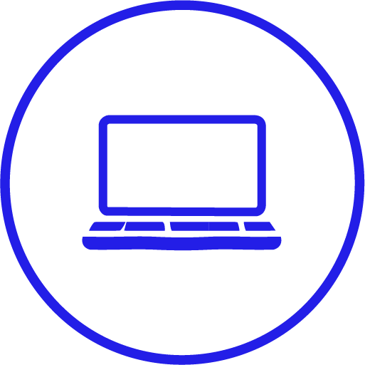

TEMA 03
GRUNDLÆGGENDE UX
I tema 03, UX/UI, har jeg arbejdet med at forbedre brugeroplevelser (UX) på brugergrænseflader (UI). For at forstå og lære om samspillet mellem brugere og brugergrænseflader, har jeg anvendt forskellige metoder til at sætte mig ind i brugernes userflows.
RESEARCH
Først og fremmest gennemførte jeg research for at få indsigt i brugernes adfærd (brugernes user behaviors), behov (user needs) og motivationer (user motivations). Dette inkluderede en grundig desktopresearch med fokus på tre nøgleområder:
- Forretningen/Kunden
- Brugeren
- Konkurenter
Gennem min research fandt jeg problemstillinger og fik indsigter. Formålet med denne proces var at forstå målgruppen bedre, afdække skjulte udfordringer og sikre, at det produkt, jeg udvikler, opfylder reelle behov.
IDE-
UDVIKLING
På baggrund af min research og mine findings gik jeg videre til idéudvikling, hvor jeg arbejdede med at omsætte indsigterne til konkrete løsninger. I denne fase skitserede jeg mulige løsninger, brainstormede idéer, fandt inspiration og udarbejdede moodboards.
PROTOTYPE

Herefter designede jeg en prototype, der var målrettet brugernes behov og mål. I designprocessen arbejdede jeg med informationsarkitektur (AI) og skabte både HiFi- og LoFi-wireframes. Jeg udviklede en digital prototype, som dækkede både mobil- og desktopversioner.
For at optimere brugeroplevelsen testede jeg prototypen på forskellige brugere. Testene gav mig nye indsigter, som gjorde det muligt at justere og forbedre både idé og prototype, så løsningen blev mere brugbar og effektiv.